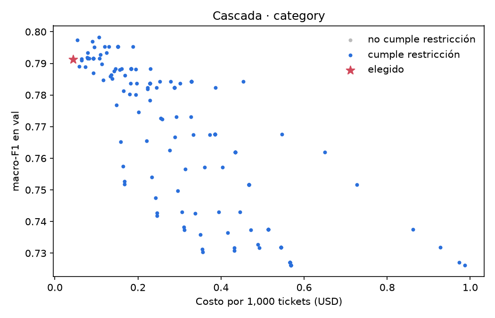

Clasificar quejas de clientes por categoría y urgencia con una cascada de costo mínimo
Luis Velasco · Proyecto final de MLOps (AWS + ML) Noviembre 2026 · Datos: CFPB Consumer Complaints
Problema
Los equipos de soporte leen cada ticket para decidir a qué área va y qué tan urgente es. Es lento, inconsistente y retrasa los casos con daño activo: fraude, dinero retenido, remates.
Datos
CFPB Narratives Archive (dominio público), 2024–2026, en inglés.
8 categorías mapeadas desde el producto CFPB; desbalance tratado con class weights.
Prioridadurgent / not_urgent destilada de Claude (2,000 tickets).
Golden set: 100 tickets etiquetados a mano en Label Studio.
Splits temporales; tags Older American y Servicemember solo para medir equidad.
Privacidad: PII redactada antes de todo
Someone opened cards in my name. Reach me at XXXX or XXXX. My SSN is XXXX.
Email, teléfono, SSN, tarjeta (validada con Luhn) y cuenta. Misma máscara XXXX que el dataset: el modelo ve lo mismo que en entrenamiento.
MLOps
CI en GitHub Actions: ruff + bandit, 197 tests (84% cobertura), Terraform validate, Trivy.
Modelos versionados e inmutables (hash de etiquetas, sha256, commit).
Caché de predicciones LLM: los experimentos no se pagan dos veces.
Infraestructura 100% Terraform, OIDC sin llaves estáticas.
Solución: cascada de costo
PIIregex
→
ClásicoTF-IDF + SVM calibrado · 6 ms · $0
→
JevTypeSafe zero-shot · $0.00006
→
Claude Haiku 4.5Bedrock · $0.0009
Cada nivel responde solo si su confianza calibrada supera el umbral; si no, escala. Los umbrales se eligieron como la opción más barata que mantiene la calidad de Claude. En prioridad, not_urgent exige confianza ≥ 0.9: seguridad sobre costo.
El clásico resuelve el 89% de los tickets, Jev el 7% y Claude el 4%.
Calidad contra costo

Arquitectura en AWS
Lambda (imagen ECR, FastAPI) con página web y API REST.
DynamoDB: tickets con nivel, confianza, versión, latencia y costo.
Bedrock (Claude) · SSM (secretos) · S3 (datos y estado).
CloudWatch: métricas, dashboard y alarmas → SNS; Budgets.
Si todos los niveles fallan, el ticket se guarda como "sin clasificar" y suena una alarma.
Equidad medida
Grupo (prueba, clásico)
macro-F1
Older American (n=63)
0.735
Servicemember (n=94)
0.753
Sin tag (n=853)
0.737
Textos más cortos (Q1)
0.640
Textos más largos (Q4)
0.789
La brecha por tag es pequeña (0.017). La mayor es por longitud (0.149): quien escribe poco recibe peor servicio. El gate de CI usa bootstrap pareado para no confundir ruido con sesgo en grupos chicos.
Riesgos y mitigación
Sesgo heredado del LLM maestro (κ = 0.54 con humanos) → golden humano y reportarlo.
Etiquetas ruidosas (producto ≠ categoría real en 31%) → reentrenar con etiquetas humanas.
Sesgo de automatización → confianza y nivel visibles; el humano decide.
Privacidad → PII redactada antes de terceros; logs sin texto.
Datos públicos que se acaban: la CFPB dejó de publicar narrativas en ago 2026.